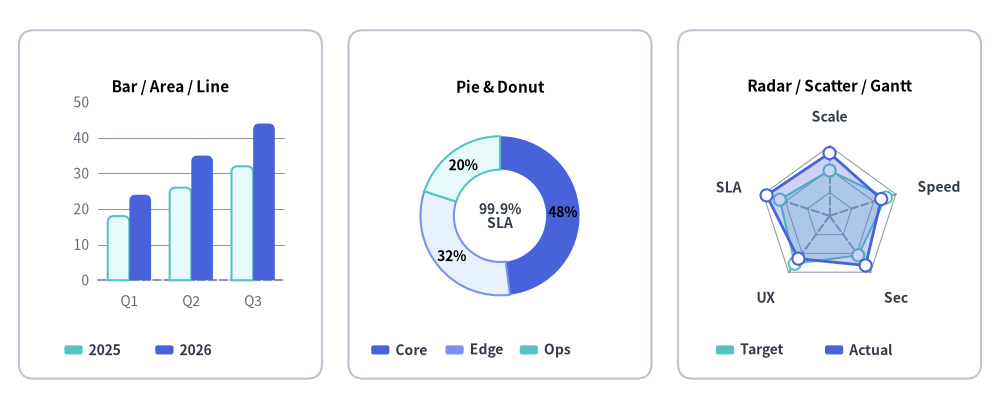
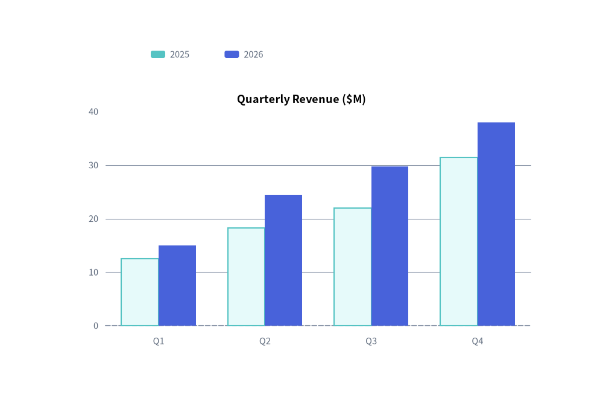
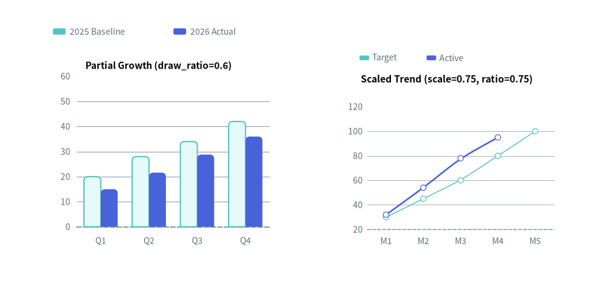

Charts Overview
The drawlib.charts module provides a declarative, pure-Python data visualization engine for comparative, statistical, relational, and project schedule charts.
All seven chart families render as first-class vector canvas components that coexist on a unified coordinate plane alongside callouts, cards, and technical diagrams.

Source Code
from drawlib.canvas import save, setup
from drawlib.charts.bar import BarChart
from drawlib.charts.pie import PieChart
from drawlib.charts.radar import RadarChart
from drawlib.shapes import rectangle
from drawlib.styles import Colors, Styles
setup(width=132, height=54)
card_style = Styles.Neutral.patch(shape_r=2.0, shape_line_color=Colors.Gray4, shape_fill_color=Colors.White)
rectangle((22.5, 27.0), width=40.0, height=46.0, style=card_style)
rectangle((66.0, 27.0), width=40.0, height=46.0, style=card_style)
rectangle((109.5, 27.0), width=40.0, height=46.0, style=card_style)
# 1. Left: Compact BarChart (Bar / Area / Line Cartesian family)
bar = BarChart(
categories=["Q1", "Q2", "Q3"],
axis_line_style=Styles.MutedDashed,
axis_text_style=Styles.Muted.patch(text_size=10.0),
grid_style=Styles.MutedThin,
width=36.0,
height=33.0,
bar_mode="group",
bar_r=0.8,
title="Bar / Area / Line",
title_style=Styles.BlackBold.patch(text_size=11.0),
)
bar.add_series("2025", [18.0, 26.0, 32.0], style=Styles.SecondaryNeutral)
bar.add_series("2026", [24.0, 35.0, 44.0], style=Styles.PrimaryFlat)
bar.draw(xy=(4.5, 12.0))
bar.draw_legend(xy=(8.5, 7.8), text_style=Styles.DarkBold.patch(text_size=10.0), orientation="horizontal")
# 2. Center: Compact PieChart Donut
pie = PieChart(
radius=10.5,
width=36.0,
height=33.0,
hole_ratio=0.58,
center_text="99.9%\nSLA",
center_text_style=Styles.DarkBold.patch(text_size=10.0),
title="Pie & Donut",
title_style=Styles.BlackBold.patch(text_size=11.0),
value_text_style=Styles.BlackBold.patch(text_size=10.0),
value_format="{:.0f}%",
)
pie.add_slice("Core", 48.0, style=Styles.PrimaryFlat)
pie.add_slice("Edge", 32.0, style=Styles.PrimaryNeutral)
pie.add_slice("Ops", 20.0, style=Styles.SecondaryNeutral)
pie.draw(xy=(48.0, 12.0))
pie.draw_legend(xy=(49.0, 7.8), text_style=Styles.DarkBold.patch(text_size=10.0), orientation="horizontal", item_gap=1.8)
# 3. Right: Compact RadarChart (5 spokes)
radar = RadarChart(
categories=["Scale", "Speed", "Sec", "UX", "SLA"],
axis_line_style=Styles.MutedDashed,
axis_text_style=Styles.DarkBold.patch(text_size=10.0),
grid_style=Styles.MutedThin,
radius=9.2,
width=36.0,
height=33.0,
min_value=0.0,
max_value=100.0,
levels=3,
grid_shape="polygon",
title="Radar / Scatter / Gantt",
title_style=Styles.BlackBold.patch(text_size=11.0),
)
radar.add_series("Target", [65, 85, 70, 85, 75], style=Styles.SecondaryNeutral, fill_alpha=0.25, line_style="dashed")
radar.add_series("Actual", [90, 78, 88, 76, 95], style=Styles.PrimaryFlat, fill_alpha=0.28)
radar.draw(xy=(91.5, 12.0))
radar.draw_legend(xy=(94.5, 7.8), text_style=Styles.DarkBold.patch(text_size=10.0), orientation="horizontal")
save()
1. Why Pure-Python Charts in Drawlib?
Unlike traditional Python visualization libraries (such as Matplotlib, Seaborn, or Plotly) that generate isolated image files or web-only canvases, Drawlib charts are first-class vector canvas elements:
- Seamless Canvas Coexistence: Charts can share the same canvas with architecture schemas, callout bubbles, and icons.
- Deterministic Layouts: All margins, tick spaces, and plot boxes are mathematically computed from explicit canvas dimensions (
width,height). - Consistent Visual Theming & Style Presence: Charts follow the "style-as-presence" philosophy. If an element has a style, it is drawn; if omitted (
None), no fallback element or unwanted default grid/background is rendered. Legends are decoupled and rendered explicitly viachart.draw_legend(...).
from drawlib.canvas import save, setup
from drawlib.charts.bar import BarChart
from drawlib.styles import Styles
setup(width=100, height=66)
chart = BarChart(
categories=["Q1", "Q2", "Q3", "Q4"],
axis_line_style=Styles.MutedDashed,
axis_text_style=Styles.Muted.patch(text_size=10.5),
grid_style=Styles.MutedThin,
width=82,
height=45,
title="Quarterly Revenue ($M)",
title_style=Styles.BlackBold.patch(text_size=13.0),
)
chart.add_series("2025", [12.5, 18.2, 22.0, 31.4], style=Styles.SecondaryNeutral)
chart.add_series("2026", [15.0, 24.5, 29.8, 38.0], style=Styles.PrimaryFlat)
chart.draw(xy=(9, 7))
chart.draw_legend(xy=(25, 57), text_style=Styles.Muted.patch(text_size=10.5), orientation="horizontal")
save()

2. The Seven Chart Families & Submodule Exports
Drawlib organizes charts into seven specialized submodules under drawlib.charts, built on a shared foundation for Axes, Scales & Legends:
| Module | Primary Class | Companion Data Models | Exported Type Literals & Aliases | Best Suited For |
|---|---|---|---|---|
drawlib.charts.bar |
BarChart |
Series, Axis |
Mode, Orientation, FormatterType, DrawDirection, LegendPosition |
Categorical comparisons (vertical, horizontal, grouped, stacked). |
drawlib.charts.line |
LineChart |
Series, Axis |
LineStyle, PointShape, FormatterType, DrawDirection, LegendPosition |
Continuous metrics and trends over time (linear or spline smoothed). |
drawlib.charts.area |
AreaChart |
Series, Axis |
Mode, FormatterType, DrawDirection, LegendPosition |
Cumulative volume and part-to-whole trends over time. |
drawlib.charts.pie |
PieChart |
Slice |
FormatterType, DrawDirection |
Proportional distributions, donut charts, and center KPI badges. |
drawlib.charts.radar |
RadarChart |
Series |
GridShape, FormatterType, DrawDirection, LegendPosition |
Multi-attribute evaluation, skill matrices, and spiderweb plots. |
drawlib.charts.scatter |
ScatterChart |
Series, Point, Axis |
ScaleType, PointShape, DrawDirection, LegendPosition |
2D correlations, cluster distributions, and 3D bubble plots. |
drawlib.charts.gantt |
GanttChart |
Task, Section, Milestone, Marker, Dependency |
DrawDirection |
Project roadmaps, phase tasks, milestones, and dependency arrows. |
Exported Type Literals Reference
| Type Alias | Definition | Used By |
|---|---|---|
Mode (bar) |
Literal["group", "stack"] |
BarChart(bar_mode=...) |
Mode (area) |
Literal["overlap", "stack"] |
AreaChart(mode=...) |
Orientation |
Literal["vertical", "horizontal"] |
BarChart(orientation=...), draw_legend(orientation=...) |
LineStyle |
Literal["solid", "dashed", "dotted", "dashdot"] |
LineChart, AreaChart, RadarChart series stroke patterns |
PointShape |
Literal["circle", "square", "rhombus", "triangle", "none"] |
ScatterChart (all 5 shapes); LineChart, AreaChart, RadarChart ("circle", "square", "none") |
GridShape |
Literal["polygon", "circle"] |
RadarChart(grid_shape=...) concentric ring geometry |
ScaleType |
Literal["linear", "log"] |
Axis(scale=...) linear Nice Numbers or $\log_{10}$ scaling |
FormatterType |
str | Callable[[float], str] | None |
Value/tick formatting ("{:.1f}%", lambda v: f"${v:,.0f}") |
DrawDirection |
Literal["bottom_to_top", "left_to_right"] |
Partial spatial rendering direction on Series, Slice, and Task (also exported at drawlib.charts.DrawDirection) |
3. Universal Chart Architecture & Presence-Based Styling
Every chart in Drawlib follows a consistent lifecycle and coordinate contract (see Axes, Scales & Legends for full details on axis formatting, logarithmic scaling, legend customization, and get_size()):
1. Dimension Instantiation & Mandatory Anchor
Specify category labels and a mandatory axis_line_style (the structural anchor for Cartesian, Radar, and Gantt charts) during initialization:
chart = BarChart(
categories=["US", "EU", "APAC"],
axis_line_style=Styles.Primary,
axis_text_style=Styles.Black,
grid_style=Styles.MutedThin,
width=90,
height=50,
title="Regional Distribution",
title_style=Styles.BlackBold,
)
2. Presence-Based Styling Summary (Style | None = None)
Drawlib charts enforce a strict "Style-as-Presence" rule: optional visual elements default to None and are only rendered when an explicit Style is provided:
| Optional Style Keyword | Default | Visual Elements Toggled When Provided (Style) |
Applicable Chart Classes |
|---|---|---|---|
axis_text_style |
None |
Axis tick labels, category names, spoke labels (RadarChart), and column/row labels (GanttChart). |
BarChart, LineChart, AreaChart, RadarChart, ScatterChart, GanttChart |
grid_style |
None |
Background value gridlines, concentric rings (RadarChart), or vertical column dividers (GanttChart). |
BarChart, LineChart, AreaChart, RadarChart, ScatterChart, GanttChart |
value_text_style |
None |
Inline numerical labels on bars, line/radar vertices, pie wedges, or scatter point callouts. | BarChart, LineChart, AreaChart, PieChart, RadarChart, ScatterChart |
title_style |
None |
Top chart title text (requires non-empty title string). |
All 7 chart classes |
background_style |
None |
Outer chart container card background fill and border stroke. | All 7 chart classes |
scale_text_style |
None |
Numeric ring scale labels along the vertical spoke of a radar web. | RadarChart |
center_text_style |
None |
Center KPI badge text inside a donut hole (requires hole_ratio > 0 and center_text). |
PieChart |
header_style |
None |
Background card fill/border for the top timeline column header band. | GanttChart |
zebra_style |
None |
Alternating horizontal row background stripes across schedule rows. | GanttChart |
progress_text_style |
None |
Completion percentage text ("85%") inside or next to task bars. |
GanttChart (chart-level or per-task) |
3. Adding Data Series & Configuring Axes
Add data series directly with explicit styles, and optionally configure axis bounds, ticks, units, or logarithmic scales via configure_x_axis() / configure_y_axis():
chart.add_series("Allocated", [120, 180, 240], style=Styles.PrimaryFlat)
chart.add_series("Available", [90, 150, 210], style=Styles.SecondaryFlat)
chart.configure_y_axis(min_value=0, max_value=300, tick_step=100, unit="TB")
4. Rendering via Bottom-Left Anchor & Decoupled Legend
All charts are anchored by their bottom-left corner via draw(xy=(x, y)). Legends are rendered independently wherever desired via draw_legend(xy=(x, y), text_style=...):
chart.draw(xy=(15, 10))
chart.draw_legend(xy=(85, 50), text_style=Styles.Black)
4. Component Lifecycle, Partial Rendering & Spatial Scaling
All Drawlib charts follow the unified 4-phase component lifecycle (1. Instantiate -> 2. Register Elements -> 3. Mutate State -> 4. Render), making it effortless to create step-by-step slide builds, progressive data reveals, and multi-chart dashboards:
1. Element Visibility (show) & Stable Axis Bounds
Every element registration method (add_series, add_slice, add, add_task, add_section, add_milestone, add_marker, add_dependency) accepts show: bool = True and returns the mutable element instance (Series, Slice, Point, Task, etc.).
- Toggling
elem.show = False(ordraw_ratio = 0.0) hides that element during rendering while preserving the full 100% dataset's automatic axis scale, pie total proportion, and Gantt row layout. Axes never jump when series are revealed sequentially across slides or animation frames.
2. Partial Spatial Rendering (draw_ratio & draw_direction)
Series, Slice, and Task objects support draw_ratio: float = 1.0 (0.0 to 1.0) and draw_direction: DrawDirection ("bottom_to_top" or "left_to_right"):
| Chart Class | Default draw_direction |
"bottom_to_top" Behavior |
"left_to_right" Behavior |
|---|---|---|---|
BarChart |
"bottom_to_top" ("vertical") / "left_to_right" ("horizontal") |
Vertical: all bars grow upward from baseline. Horizontal: bars reveal sequentially from bottom category to top. | Vertical: bars reveal sequentially across categories left-to-right. Horizontal: all bars grow rightward from baseline. |
LineChart |
"left_to_right" |
All vertices rise simultaneously from the baseline toward target y. |
Curve extends continuously from left to right along arc length. |
AreaChart |
"left_to_right" |
Area polygon and top contour rise from the baseline / lower stack. | Area polygon and top contour sweep continuously from left to right. |
ScatterChart |
"left_to_right" |
Points rise from the bottom axis toward target y (radius * r). |
Points reveal left-to-right across the X-axis range. |
PieChart |
"left_to_right" |
Wedge grows radially outward from inner hole to outer radius. | Wedge sweeps angularly from start_angle across sweep_angle * r. |
RadarChart |
"bottom_to_top" |
Polygon expands radially outward from center min_value. |
Polygon sweeps spoke-by-spoke around the perimeter. |
GanttChart |
"left_to_right" |
Task bar grows vertically from its bottom edge to full height. | Task bar extends horizontally from start toward end. |
3. Spatial Overrides & Proportional Scaling (scale)
Every draw() call accepts optional temporary layout overrides (width, height, and radius on PieChart/RadarChart) as well as scale: float = 1.0 (also supported on draw_legend()). Passing scale != 1.0 scales the entire chart—including plot geometry, stroke widths, point markers, and font sizes—proportionally from xy:
from drawlib.canvas import save, setup
from drawlib.charts.bar import BarChart
from drawlib.charts.line import LineChart
from drawlib.styles import Styles
setup(width=115, height=58)
# Left: BarChart with partial series rendering (draw_ratio)
bar = BarChart(
categories=["Q1", "Q2", "Q3", "Q4"],
axis_line_style=Styles.MutedDashed,
axis_text_style=Styles.Muted.patch(text_size=10.0),
grid_style=Styles.MutedThin,
width=48,
height=38,
title="Partial Growth (draw_ratio=0.6)",
title_style=Styles.BlackBold.patch(text_size=11.0),
bar_r=0.8,
)
bar.add_series("2025 Baseline", [20, 28, 34, 42], style=Styles.SecondaryNeutral, draw_ratio=1.0)
bar.add_series("2026 Actual", [25, 36, 48, 60], style=Styles.PrimaryFlat, draw_ratio=0.6)
bar.draw(xy=(6, 10))
bar.draw_legend(xy=(10, 52), text_style=Styles.Muted.patch(text_size=10.0), orientation="horizontal")
# Right: LineChart rendered at compact 0.75x proportional scale
line = LineChart(
categories=["M1", "M2", "M3", "M4", "M5"],
axis_line_style=Styles.MutedDashed,
axis_text_style=Styles.Muted.patch(text_size=13.5),
grid_style=Styles.MutedThin,
width=60,
height=46,
title="Scaled Trend (scale=0.75, ratio=0.75)",
title_style=Styles.BlackBold.patch(text_size=15.0),
smooth=True,
)
line.add_series("Target", [30, 45, 60, 80, 100], style=Styles.SecondaryNeutral, line_style="dashed")
line.add_series("Active", [32, 54, 78, 95, 120], style=Styles.PrimaryFlat, line_width=2.5, draw_ratio=0.75)
line.draw(xy=(62, 10), scale=0.75)
line.draw_legend(xy=(68, 47), text_style=Styles.Muted.patch(text_size=13.5), orientation="horizontal", scale=0.75)
save()
